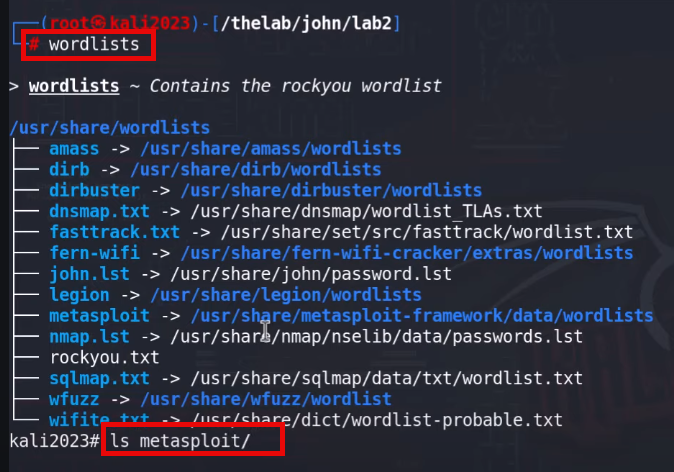

> ls metasploit | nl

exit the worlist
> pwd
> exit
copy one worlist to the john directory
> cp /usr/share/wordlists/rockyou.txt .

> john --wordlist=rockyou.txt --format=raw-sha256 cars.txt

let's find a different file
> unshadow /etc/passwd /etc/shadow > passshadow
> cat passshadow

john --wordlist=rockyou.txt --format=raw-sha256 passshadow